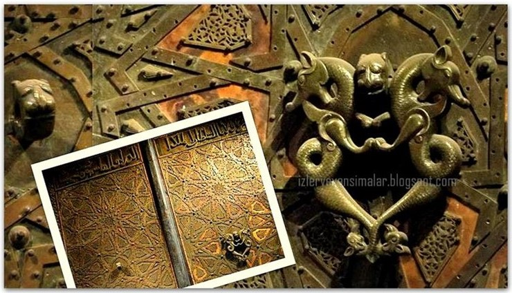

Kitabın 6. bölümü, devasa kapı kilitleri, şifreli kilitler, kasalar, açıölçer tasarımı ve oymacılık gibi çeşitli bilgileri içerir.
Hızlı Erişim İçin Bu Etiketleri Kullanınız !
 Saray Kapısı
Saray Kapısı
Cizre Ulu Camii'nin Kapısı
Geometrik Çizim Aleti
Şifre Kilitli Sandık
Dört Sürgülü Kapı Kilidi
Saray Kapısı
El Cezerî'nin, Diyarbakır İç Kale'de bulunan Artuklu Sarayı için yaptığı bu kapı 4 metre yüksekliğinde, 1.5 metre enindedir. Kapının kanatlarının orta kısmında altıgen ve sekizgen motifler bulunur.
Başa Dön
Cizre Ulu Camii'nin Kapısı
Cizre Ulu Camii'nin Ejderha Motifli Kapı Tokmağı (Cizre Ejderleri)
Başa Dön
Geometrik Çizim Aleti
Cezeri bir de çizim aleti yapmıştır. Kendisi bir küre üzerindeki herhangi üç noktanın tek bir çember üzerinde olduğunu söylediğinde, bazılarının bunu inandırıcı bulmadığını ve bir pergelle ispat etmesini istediklerini söylüyor. Bunun için hem küre üzerinde hem de bir düzlemde üç noktadan geçen bir çemberin merkezinin bulunması için bu aleti yapıyor. Bununla, düzlemdeki üç noktayı birleştiren iki doğru parçasının orta dikmelerinin kesişme noktasını, yani bugün okul kitaplarında anlatıldığı şekilde çemberin merkezini buluyor. Küresel yüzeylerde ise, alet ince ve esnek malzemeden yapıldığı için, yüzeye tam intibak ettirilerek noktaları birleştiren çizgilerin orta dikmelerinin kesişme noktasını buluyor. Bu aleti, eşkenar üçgen, düzgün beşgen ve düzgün altıgen çizmek için de kullanıyor. Cezeri’nin çizdiği resmin yanı sıra fotoğrafta da görüldüğü gibi bugün de, metal imalat sektöründe bu aletin kullanımına aynı yapı şekliyle devam edilmektedir.
Başa Dön
Şifre Kilitli Sandık
Cezeri kilit sistemleri konusunda da çalışmış ve bir şifreli kilit geliştirmiştir. Bilim tarihçileri, böyle kilit sistemlerine Cezeri’den önceki medeniyetlerde rastlanmadığını, şifre kilitli sandığın benzerlerinin daha sonra Avrupa’da yapıldığını ve bunların bütün veya parçalar halinde günümüze ulaştığını söylüyorlar.
Cezeri’nin yaptığı şifre kilitli sandık, bildiğimiz evrak veya mücevher sandığı şeklindedir. Kapağında dört ayrı şifre ünitesi, her bir ünitede iç içe üç halka ve bu halkaların her birinde alfabenin seçilmiş 16 harfi vardır. Sandığın sahibi bu harflerden, tercihine göre, her bir halka için 1 harf olmak üzere 12 tanesini seçiyor ve sıralayarak şifresini oluşturuyor. Bu şifreye göre kapağın iç tarafındaki disklerde ayarlama yapılıyor. Saklanacak belge veya mücevherler sandığa konduktan sonra kapak kapatılıyor, üzerindeki kulp çevrilerek kilitleniyor ve ünitelerdeki halkalar gelişigüzel çevrilerek karıştırılıyor. Bu sandığı açmak için 1612 = 248 (281 Trilyon) olasılık bulunmaktadır.
Başa Dön
Dört Sürgülü Kapı Kilidi
Bilim tarihçileri, Cezeri’nin geliştirdiği bu sürgülü kilit sisteminin de kendinden önce görülmediğini söylüyorlar. Bu dört sürgülü kapı kilidi, büyük kapıları arkadan kilitlemek için kullanılan sürgülerin, tek kanatlı bir kapının dört kenarına da uygulanmış şeklidir. Kapı yalnızca ön tarafından bir anahtar ile kolayca açılıp kilitlenebilmektedir. Göbek kısmında anahtarın çevirdiği bir dişli çark, dört sürgüyü de açmakta veya kapatmaktadır. Ayrıca burada bulunan ayrı bir tertibat, kapının iç tarafından açılmasını veya sürgülenmesini engellemektedir. Sürgü kolları demir yapıldığı takdirde, verilen ölçülere göre, dikey olanların her birinin ağırlığı yaklaşık olarak 40 kg’dır. Buna rağmen anahtar el kuvveti ile çevrildiğinde sistem gayet rahat çalışmaktadır. Perspektif kapının iç tarafından görünüştür. Mekanizmanın görünmesi için cam kapak çizilmiştir
Başa Dön
.JPG)